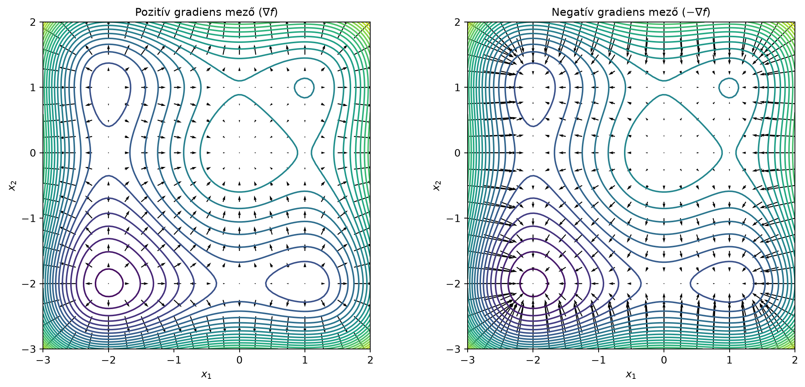
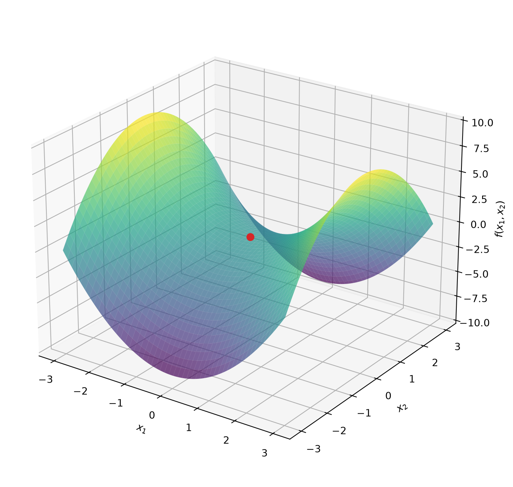

Haladó optimalizációs módszerek
Bevezetés
Szélsőértékek és deriváltak
\(f'(x_0)\): a \(x_0\)-beli érintő meredeksége.
NoteMonotonitás
Ha \(f'(x_0) > 0\), akkor a függvény szigorúan monoton növekvő \(x_0\)-ban.
Ha \(f'(x_0) < 0\), akkor a függvény szigorúan monoton csökkenő \(x_0\)-ban.
Ha \(x_0\) lokális szélsőérték, akkor \(f'(x_0) = 0\), viszont ez fordítva nem igaz.
NoteKonvexitás és szélsőértékek
Ha az \(f : \mathbb{R} \rightarrow \mathbb{R}\) kétszer differenciálható és \(f'(x_0) = 0\), azaz stacionárius pont, akkor:
- \(f''(x_0) > 0\): a függvény \(x_0\) pontban konvex, azaz lokális minimumot vesz fel.
- \(f''(x_0) < 0\): a függvény \(x_0\) pontban konkáv, azaz lokális maximumot vesz fel.
Minimumhely közelítése
NoteGradiens módszer
Egy \(x_0\) pontból indulva, \(k = 1, 2, 3, \ldots\) esetén
\[x_{k+1} = x_k - \alpha f'(x_k)\]
, ahol \(a > 0\) a lépéshossz (tanulási paraméter, learning rate).
CautionMagyarul
Úgy keressük meg a minimumhelyet, hogy lederiváljuk az aktuális pontban a függvényt, majd abba az irányba megyünk valamennyit.
Például: \(x^2\) függvény esetén a minimumhely \(x = 0\), és ha \(x_0 = 1\)-ből indulunk, akkor a derivált \(f'(1) = 2\), vagyis pozitív irányba megyünk. Ha a lépéshossz \(\alpha = 0.1\), akkor \(x_1 = 1 - 0.1 \cdot 2 = 0.8\) lesz az új pont, majd onnan folytatjuk a keresést.
A lépéshossz hatása
Tekintsük az \(f(x) = \frac{x^4}{4} + \frac{x^3}{3} - x^2 + 1\) függvényt a \([-3, 2]\) intervallumon, ahol \(x_0 = -2.4\)-ből indulunk.
TipLeállási feltétel és stabilitás
- Miért \(|f'(x_k)| < 10^{-3}\) esetén állunk le? Lokális szélsőértékben a derivált nulla. Mivel a lépésekkel egyre lassabban haladunk, véges gépi pontossággal ritkán érünk el pontosan \(0\)-t. Ha \(|f'(x_k)| < 10^{-3}\), a felület már lapos, a minimum közvetlen környezetében vagyunk, a további lépések feleslegesek.
- Oszcilláció: Túl nagy lépéshossz esetén átugorjuk a völgy alját, és a szemközti falon kötünk ki. A pont ide-oda kezd pattogni a völgy két oldala között.
- Gradiens kilövés: Ha a lépéshossz nagyon nagy, minden ugrás után még meredekebb szakaszra érkezünk, így a lépések exponenciálisan nőnek, és a gradiens pillanatok alatt a végtelenbe lő ki.
A 3 tipikus viselkedés \(x_0 = -2.4\)-ből indítva:
- \(\alpha = 0.1\) (Konvergens): Stabilan és gyorsan bekonvergál a globális minimumba.
- \(\alpha = 0.5\) (Oszcilláció): Átugorja a minimumot, és a két fal között pattog ide-oda.
- \(\alpha = 1.2\) (Kilövés): Azonnal kiszabadul a tartományból, a gradiens kilő a végtelenbe.
Lépéshossz választási módszerek
TipKonstans lépéshossz
Az iterációszám függvényében csökkenő lépéshossz, például:
- \(\alpha_k = \alpha_0 \cdot c^{k}\), ahol \(c < 1\)
- \(\alpha_k = \alpha_0e^{-c \cdot k}\)
- \(\alpha_k = \frac{\alpha_0}{1 + c \cdot k}\)
Itt a \(c\) egy pozitív konstans, amely a csökkenés mértékét szabályozza. Minél nagyobb \(c\), annál gyorsabban csökken a lépéshossz, így a gradiens módszer stabilabb lesz, de lassabban konvergál.
TipDinamikus lépéshossz
A célfüggvény értékétől függően, adaptívan változó lépéshossz, például:
\(\alpha_{k+1} = \alpha_k \cdot 1.05\), ha \(f(x_{k+1}) < f(x_k)\), míg romló függvényérték esetén újraszámoljuk a lépéshosszt, például \(\alpha_{k+1} = \frac{\alpha_k}{2}\). Vagyis ha a függvényérték csökken, növeljük a lépéshosszt, ha nő, csökkentjük.
ImportantCélfüggvény
A célfüggvény az a függvény amelynek a minimumát keressük. Mesterséges intelligencia alkalmazásokban a célfüggvény gyakran a veszteségfüggvény (loss function), amely a modell teljesítményét méri. A gradiens módszer célja, hogy a célfüggvény értékét minimalizálja az iterációk során.
Többváltozós függvények
Gradiens vektor és Hesse-mátrix
TipTöbbváltozós függvény
Olyan függvény, amelynek több bemeneti változója van, például:
\(f(x, y) = x^2 + y^2\) egy kétváltozós függvény, ahol a bemeneti változók \(x\) és \(y\). Kétváltozós függvény egy felületet ír le a háromdimenziós térben, ahol a függvényérték a \(z\) tengelyen jelenik meg.
NoteGradiens vektor
Az \(f: \mathbb{R}^n \rightarrow \mathbb{R}\) függvény esetén minimumhelyet keresve a gradiens vektorral az irányt határozzuk meg, amelyben a függvény leggyorsabban nő. A gradiens vektor komponensei a függvény parciális deriváltjai az egyes változók szerint:
\[\nabla f(x) = \left[\begin{array}{ccc} \frac{\partial f}{\partial x_1}(x) \\ \vdots \\ \frac{\partial f}{\partial x_n}(x) \end{array}\right] \]
CautionPélda a gradiens vektorra
Legyen az \(f(x, y) = x^2 + y^2\) függvény. A gradienst úgy számoljuk ki, hogy a függvényt lederiváljuk egyszer az \(x\) és egyszer a \(y\) változó szerint. Ilyenkor a másik változót konstansnak tekintjük:
\[\frac{\partial f}{\partial x} = 2x + 0 = 2x\]
\[\frac{\partial f}{\partial y} = 0 + 2y = 2y\]
Ilyenkor a gradiens vektor: \(\nabla f(x, y) = \left[\begin{array}{c} 2x \\ 2y \end{array}\right]\)
Tehát a felületen \((1, 1)\) pontban a gradiens vektor: \(\nabla f(1, 1) = \left[\begin{array}{c} 2 \\ 2 \end{array}\right]\), ami az \((1, 1)\) pontból a \((2, 2)\) irányába mutat. Ez azt jelenti, hogy a függvény leggyorsabban ebbe az irányba nő.
NoteHesse-mátrix
A Hesse-mátrix a függvény második deriváltjainak mátrixa, amely a függvény görbületét írja le. Egyváltozósan ez egyszerűen a második derivált, többváltozós függvény esetén a Hesse-mátrix a parciális második deriváltakból áll:
\[\nabla^2f(x) = \left(\frac{\partial^2 f}{\partial x_i \partial x_j}(x)\right)_{i,j} \in \mathbb{R}^{n \times n}\]
CautionPélda a Hesse-mátrixra
Legyen az \(f(x, y) = x^2 + y^2\) függvény. Ilyenkor a Hesse-mátrix egy 2x2-es mátrix, amelynek elemei a függvény második parciális deriváltjai: \[ \nabla^2f(x, y) = \begin{pmatrix} \frac{\partial^2 f}{\partial x^2}(x, y) & \frac{\partial^2 f}{\partial x \partial y}(x, y) \\ \frac{\partial^2 f}{\partial y \partial x}(x, y) & \frac{\partial^2 f}{\partial y^2}(x, y) \end{pmatrix} \]
Elsődrendű deriváltak:
- \(\frac{\partial f}{\partial x} = 2x\)
- \(\frac{\partial f}{\partial y} = 2y\)
Másodrendű deriváltak:
- \(\frac{\partial^2 f}{\partial x^2} = 2\) - Vagyis kétszer az \(x\) szerinti deriváltja.
- \(\frac{\partial^2 f}{\partial y^2} = 2\) - Vagyis kétszer az \(y\) szerinti deriváltja.
- \(\frac{\partial^2 f}{\partial x \partial y} = 0\) - Először az \(x\) szerinti deriváltat vesszük, majd a \(y\) szerinti deriváltat, ami nulla, mivel nincs \(y\)-t tartalmazó tag az első deriváltban.
- \(\frac{\partial^2 f}{\partial y \partial x} = 0\) - Hasonlóan, először az \(y\) szerinti deriváltat vesszük, majd az \(x\) szerinti deriváltat, ami szintén nulla.
Így a végleges Hesse-mátrix: \[ \nabla^2f(x, y) = \begin{pmatrix} 2 & 0 \\ 0 & 2 \end{pmatrix} \]
TipGradiens használata többváltozós függvényeknél
Minimalizálásnál negatív gradiens vektor irányba lépünk, mivel a gradiens a legmeredekebb növekedés irányát mutatja. Negatív gradiens mező így néz ki a \(f(x) = \frac{x_1^4}{4} + \frac{x_2^4}{4} + \frac{x_1^3}{3} + \frac{x_2^3}{3} - x_1^2 - x_2^2 + 2 \space\) függvény esetén.

Lokális szélsőérték feltételek
NoteElsőrendű szükséges feltétel
Ha \(x^*\) egy lokális szélsőérték, és a \(f\) függvény folytonosan differenciálható az \(x^*\) nyílt környezetében (vagyis a \(f\) függvény deriváltja létezik az \(x^*\) pontban), akkor a \(\nabla f(x^*) = 0\).
NoteStacionárius pont
Ha \(\nabla f(x^*) = 0\), akkor az \(x^*\) pontot stacionárius pontnak nevezzük. A stacionárius pont lehet lokális minimum, lokális maximum vagy nyeregpont, amely se nem minimum, se nem maximum.
TipPélda nyeregpontra
Az alábbi ábrán a \(f(x_1, x_2) = x_1^2 - x_2^2\) függvény stacionárius pontja a \((0, 0)\) pont, amely egy nyeregpont. A gradiens vektorok a stacionárius pontban nullvektorok, azaz \(\nabla f(0, 0) = (0, 0)\).

Kvadratikus függvény és Taylor-approximáció
NoteKvadratikus függvény
Az \(f: \mathbb{R}^n \to \mathbb{R}\) függvényt kvadratikus függvénynek nevezzük, ha:
\[f(x) = \frac{1}{2} x^T A x + b^T x + c\]
alakba írható, ahol \(A \in \mathbb{R}^{n \times n}\) egy szimmetrikus mátrix, \(b \in \mathbb{R}^n\) egy vektor, és \(c \in \mathbb{R}\) egy skalár.
CautionPélda kvadratikus függvényre
Legyen az
\[f(x_1, x_2) = x_1^2 + 2x_2^2 + 2x_1 x_2 - 4x_1 + 6x_2 + 5\]
Ekkor \(x = \begin{pmatrix} x_1 \\ x_2 \end{pmatrix}\), és a mátrixos alak:
\[f(x) = \frac{1}{2} \begin{pmatrix} x_1 & x_2 \end{pmatrix} \begin{pmatrix} 2 & 2 \\ 2 & 4 \end{pmatrix} \begin{pmatrix} x_1 \\ x_2 \end{pmatrix} + \begin{pmatrix} -4 & 6 \end{pmatrix} \begin{pmatrix} x_1 \\ x_2 \end{pmatrix} + 5\]
Ahol az együtthatók:
- \(A = \begin{pmatrix} 2 & 2 \\ 2 & 4 \end{pmatrix}\) (szimmetrikus mátrix, a főátlón kívüli elemek összege adja a vegyes tagot: \(\frac{1}{2}(2 + 2) = 2\))
- \(b = \begin{pmatrix} -4 \\ 6 \end{pmatrix}\) (lineáris tagok együtthatói)
- \(c = 5\) (konstans tag)
TipKvadratikus függvény gradiens és Hesse-mátrix
Ilyenkor a gradiens és a Hesse-mátrix a következőképpen alakul:
\[\nabla f(x) = A x + b \qquad \nabla^2 f(x) = A\]
Ez azért jó, mert nem kell minden iterációban újra számolni a Hesse-mátrixot, mivel az állandó, a gradiens pedig lineárisan függ a változóktól, és ez kevésbé számításigényes, mint egy általános függvény esetén.
NoteTaylor-approximáció
Legyen \(f: \mathbb{R}^n \to \mathbb{R}\) egy elegendően sokszor differenciálható függvény, ilyenkor:
\[f(x_0 + \delta x) \approx f(x_0) + \nabla f(x_0)^T \cdot \delta x \]
illetve
\[f(x_0 + \delta x) \approx f(x_0) + \nabla f(x_0)^T \cdot \delta x + \frac{1}{2} \delta x^T \nabla^2 f(x_0) \cdot \delta x\]
CautionMagyarul
Az első egyenlet a lineáris Taylor-approximáció: az \(x_0\) pontbeli érintősíkkal közelíti a felületet. A \(\delta x\) a tetszőleges irányú elmozdulás, és a gradiensvektorral vett skaláris szorzata (\(\nabla f(x_0)^T \delta x\)) adja meg, hogy a meredekség alapján mennyit változik a függvényérték. Pontosan ugyanaz, mint egyváltozós esetben a gradiens módszer, csak itt több dimenzióban dolgozunk.
A második egyenlet a kvadratikus Taylor-approximáció: a sík helyett már egy másodrendű paraboloid felületet illeszt a pontra. Nemcsak a meredekséget, hanem a felület görbületét is figyelembe veszi a Hesse-mátrix (\(\nabla^2 f(x_0)\)) segítségével, így sokkal pontosabb képet ad a függvény alakjáról egy völgyben vagy nyeregben.
NoteStacionárius pont és Hesse-mátrix
Ha \(x_0\) stacionárius pont (\(\nabla f(x_0) = 0\)), akkor
\[f(x_0 + \delta x) \approx f(x_0) + \frac{1}{2} \delta x^T \nabla^2 f(x_0) \cdot \delta x\]
vagyis a Hesse-mátrix adhatja meg, hogy a stacionárius pont lokális minimum, maximum vagy nyeregpont. A Hesse-mátrix sajátértékei alapján dönthetünk:
- ha \(x^T \cdot \nabla^2f(x_0) \cdot x > 0\), akkor a stacionárius pont lokális minimum (a Hesse-mátrix pozitív definit, minden sajátértéke pozitív)
- ha \(x^T \cdot \nabla^2f(x_0) \cdot x < 0\), akkor a stacionárius pont lokális maximum (a Hesse-mátrix negatív definit, minden sajátértéke negatív)

Lineáris regresszió és a kvadratikus függvény
NoteLineáris regresszió
Adottak az \((x^{(i)}, y^{(i)} )\) adatok, ahol:
- \(x^{(i)} = [x_1^{(i)}, \ldots, x_d^{(i)}] \in \mathbb{R}^d\) jellemzővektorok (sorvektorok),
- \(y^{(i)} \in \mathbb{R}\) a célváltozók.
Olyan \(w_1, \ldots, w_d \in \mathbb{R}\) súlyokat keresünk, melyekkel:
\[y^{(i)} \approx w_1 x_1^{(i)} + \cdots + w_d x_d^{(i)} = x^{(i)} \cdot w\]
ahol \(w\) a súlyok oszlopvektora. A súlyokat az
\[f(w) = \frac{1}{2}\sum_{i=1}^n (x^{(i)}w - y^{(i)})^2 = \frac{1}{2}\|Xw - y\|_{2}^2\]
függvény minimlizálásával találjuk meg, ahol \(X\) a jellemzők mátrixa, \(y\) pedig a célváltozók vektora.
CautionMagyarázat
Az \(x^{(i)}w\) kifejezéssel a modelünk által becsült értéket kapjuk az \(y^{(i)}\) értékhez. A \((x^{(i)}w - y^{(i)})^2\) kifejezés a becsült és a tényleges érték közötti négyzetes hibát adja meg. A \(\frac{1}{2}\|Xw - y\|_{2}^2\) kifejezés a hibát összegzi az összes adatponton.
\[\|a\|_{2} = \sqrt{a_1^2 + \cdots + a_n^2}\]
NoteKvadratikus függvény a lineáris regresszióban
\[f(w) = \frac{1}{2}\|Xw - y\|_{2}^2 = \frac{1}{2}(Xw - y)^T (Xw - y) = \] \[= \frac{1}{2}w^T X^T X w - w^T X^T y + \frac{1}{2}y^T y\]
ami egy kvadratikus függvény. Ha \(X\) oszlopai lineárisan függetlenek, akkor a Hesse-mátrix \(X^TX\) pozitív definit, így a függvény konvex, és egyértelmű minimuma van.
A \(\nabla f(w) = 0\) feltételből a Gauss-féle normálegyenletet kapjuk: \[X^T X w = X^T y\]
Ha \(X\) oszlopai nem függetlenek, akkor a minimumhely nem egyértelmű.
CautionMagyarázat
\((Xw-y)^T (Xw-y)\) kifejezés azért egyenértékű a \(\|Xw - y\|_{2}^2\) kifejezéssel, mert a vektorok négyzetes normája megegyezik a vektor transzponáltjával vett skaláris szorzattal: \[\|a\|_2^2 = a^T a\]
Pl. ha \(a = \begin{pmatrix} a_1 \\ a_2 \\ a_3 \end{pmatrix}\), akkor: \[\|a\|_2^2 = a_1^2 + a_2^2 + a_3^2 = \begin{pmatrix} a_1 & a_2 & a_3 \end{pmatrix} \begin{pmatrix} a_1 \\ a_2 \\ a_3 \end{pmatrix} = a^T a\]
Innen úgy kapjuk a kvadratikus alakot, hogy kifejtjük a \((Xw - y)^T (Xw - y)\) szorzatot: \[(Xw - y)^T (Xw - y) = (Xw)^T (Xw) - (Xw)^T y - y^T (Xw) + y^T y =\] \[= w^T X^T X w - 2 w^T X^T y + y^T y\]
Ha figyeljük a kvadratikus függvény általános alakját (\(\frac{1}{2} w^T A w + b^T w + c\)), akkor láthatjuk, hogy:
- \(A = X^T X\) (szimmetrikus mátrix)
- \(b = -X^T y\) (lineáris tag)
- \(c = \frac{1}{2}y^T y\) (állandó tag)
Ha lederiváljuk a kvadratikus függvényt, akkor a gradiens: \[\nabla f(w) = X^T X w - X^T y\]
Ha a gradiens nullvektor, akkor a Gauss-féle normálegyenletet kapjuk: \[X^T X w = X^T y\]
ami azt jelenti, hogy a lineáris regresszió optimális súlyait a normálegyenlet megoldásával találjuk meg.
Optimalizációs algoritmusok többváltozós függvényekre
Gradiens módszer
NoteGradiens
Az \(f: \mathbb{R}^n \to \mathbb{R}\) minimumhelyét keressük. Ehhez egy közelítősorozatot definiálunk.
\(x_0\)-ból \((x_0 + \alpha \cdot p)\)-be lépünk, ahol \(p\) a lépés iránya, \(\alpha\) pedig a lépéshossz.
\[f(x_0 + \alpha p) \approx f(x_0) + \alpha \nabla f(x_0)^T \cdot p\]
Ha \(\nabla f(x_0)^T \cdot p < 0\), akkor a függvény csökken.
\(p = -\nabla f(x_0)\) az \(x_0\)-beli legmeredekebb csökkenés iránya
\(p = \nabla f(x_0)\) az \(x_0\)-beli legmeredekebb emelkedés iránya
TipGradiens módszer
\(x_0\) kezdővektor, \(\alpha > 0\)
\[x_{k+1} = x_k - \alpha \nabla f(x_k)\]
Fontos a jó lépésköz kiválasztása, mert ha túl nagy, akkor a minimumtól távolodhatunk, ha túl kicsi, akkor lassan konvergálunk. Választási módszerek: iterációszám függvényében csökkenő, célfüggvény értékének megfelelően csökkenő, vagy iránymenti keresés (vagyis az \(\alpha\)-t úgy választjuk, hogy \(- \nabla f(x_k)\) irányban az optimális lépést találjuk).